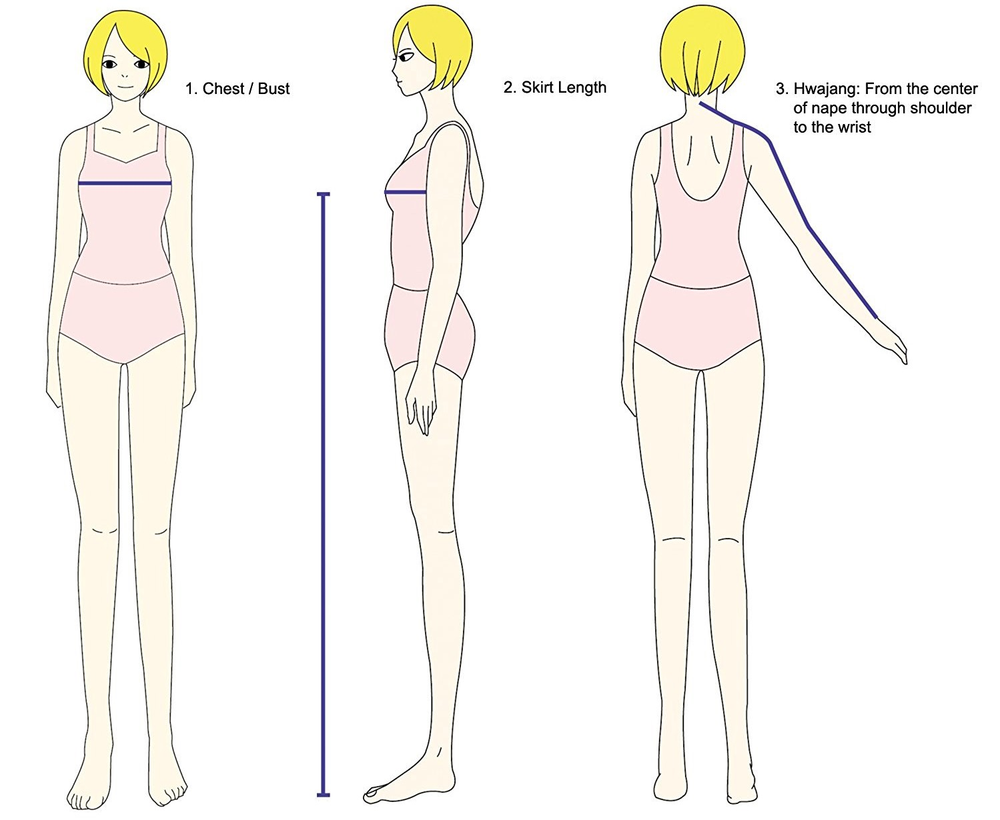

How to Measure
Please carefully follow our "How to Measure" guide. (UNIT: INCH)

Height
- Start from Bulging bone behind neck.
- Keep measure until it reaches to the floor and add height of your shoes.
Arm and Sleeve Length / Hwajang
- Start from Bulging bone behind neck.
- Pass by shoulders Point.
- To back of hand. Keep measure until it reaches to 1 inch below wristbone.
Neck Width
- Point where neck and shoulder line meets.
- Go around neck.
Upperchest
- Raise both Arm.
- Go around Chest right below armpit. Don't tighten tapeline too hard.
Source: https://hanboksarang.com/